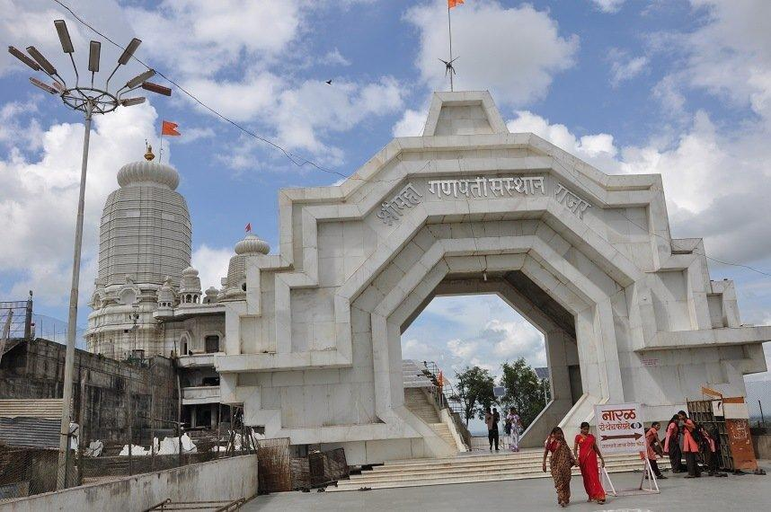
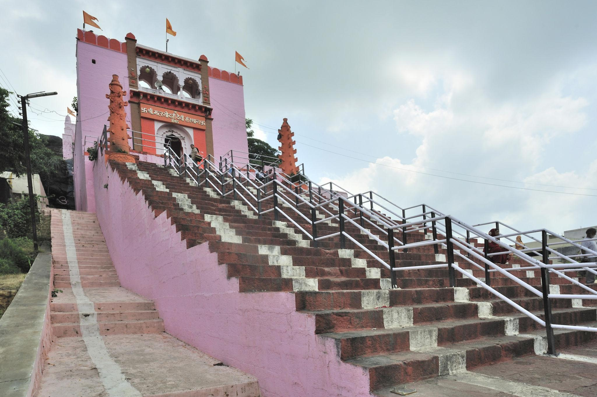
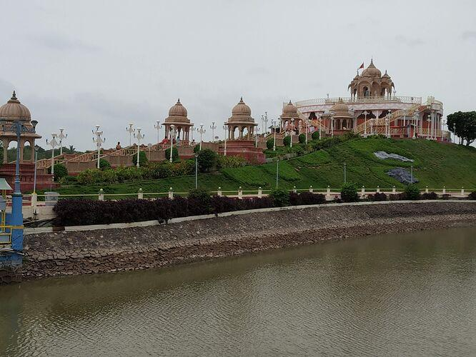
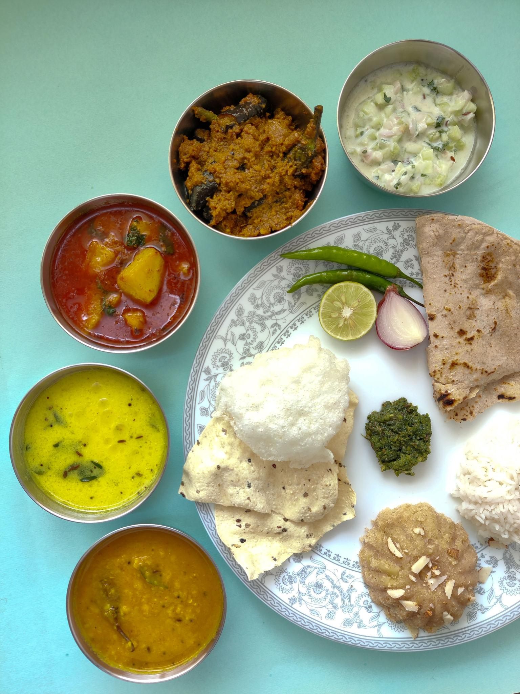
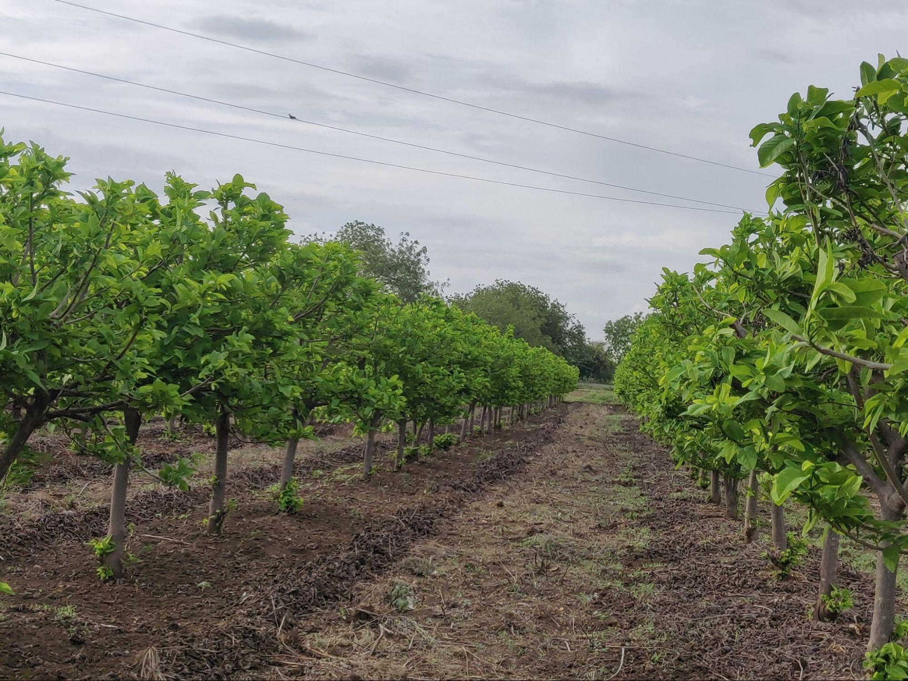
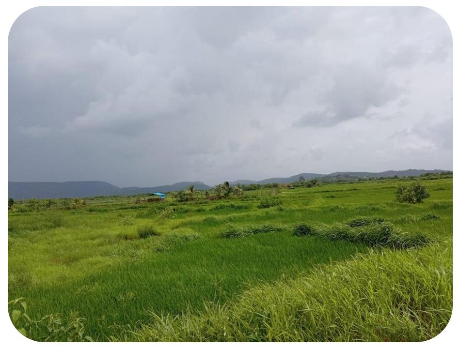
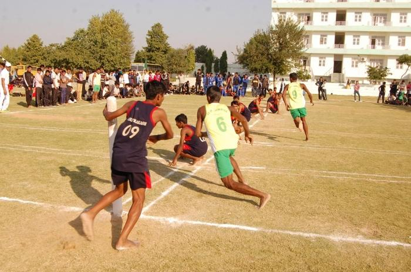

About

Jalna is a rapidly growing city located right in the geographic heart of Maharashtra, India. It serves as the primary administrative headquarters for the entire Jalna district within the Marathwada region. The city is beautifully positioned on the banks of the Kundalika River, which has shaped its growth for centuries. Today, it is widely recognized across the nation as a major industrial hub and a prime agricultural center. It holds the proud title of the "Seed Capital of India" due to its massive farming innovations.
- Location:It is located in the Marathwada region of Maharashtra, India, situated on the banks of the Kundalika River.
- Famous as:It is widely known as the "Seed Capital of India" for its hybrid seed companies, and the "City of Steel" due to its large number of steel plants and rolling mills. It is also famous for its production of sweet limes (Mosambi).
History

The history of Jalna stretches back to ancient times and is filled with fascinating legends. Local lore suggests the city was originally called Janakpur, named after King Janaka, the father of Sita from the epic Ramayana. During the medieval period, it became a highly prosperous trading town under the rule of the Mughal Emperor Akbar. Wealthy nobles and merchants built grand mansions, beautiful public gardens, and large mosques here during the 17th century. Later, the city came under the control of the Nizams of Hyderabad before finally becoming part of independent India.
- Jalna boasts a rich past dating back to the Ramayana era when it was known as Janakpur. Over the centuries, it was ruled by powerful dynasties like the Satavahanas, Yadavas, and the Mughals. Under Mughal rule, Akbar made it a pargana, and the 400-year-old Kali Masjid was built during this era. In 1725, Kabil Khan built the Jalna Fort (Mastgad) on the orders of Nizam-ul-Mulk to protect the town against Maratha forces. The region also gained historical prominence in 1803 as the site of the famous Battle of Assaye, where British forces led by Arthur Wellesley defeated the Maratha army.
Culture

Jalna stands as a beautiful example of peace, unity, and deep religious harmony. The local population is a vibrant mix of people practicing Hinduism, Islam, Buddhism, Jainism, and Christianity. This rich diversity is reflected in the city’s everyday life, where people happily share in each other's traditions. Massive crowds gather every year to celebrate festivals like Ganesh Chaturthi, Diwali, Eid, and Buddha Purnima with great joy. Traditional folk music, Marathi theatre, and community fairs keep the local heritage alive for the younger generation.
- Main Festivals: The city celebrates Diwali, Holi, Ganesh Chaturthi, Navratri, Eid, and Buddha Purnima with great joy.
- Traditional Arts:The region is known for local theatre, traditional folk music, and Kushti (traditional Indian wrestling).
- Language:Marathi is the primary and official language spoken by the locals.
Tourism

There are many wonderful historical landmarks and spiritual spots for travelers to explore in Jalna. A major attraction is the ancient Matsyodari Devi Temple, which sits on a unique hill that looks exactly like a fish. History lovers enjoy visiting the ruins of the Mastgad Fort, which features old stone walls and historic defense gates. The city is also home to beautiful old mosques, like the Kali Masjid, which showcase brilliant Mughal architecture. Recently, agro-tourism has become very popular, allowing tourists to spend a day experiencing real farm life.
- Jalna Fort (Mastgad): A historic 1725 stone citadel featuring unique rooms and old Persian inscriptions.
- Sri Ganesh Temple (Rajur): A highly revered pilgrimage site considered a complete "Pithas" of Lord Ganesh.
- Matsyodari Devi Temple: A famous ancient hill temple in Ambad shaped like a fish ("Matsya").
Famous Food

The food culture in Jalna offers an authentic taste of rich, spicy, and flavorful Maharashtrian cuisine. The absolute staple meal for locals is jowar or bajra bhakri (healthy flatbreads) paired with super spicy vegetable curries. People also love shev bhaji, a unique dish made of savory crispy noodles cooked in a fiery, seasoned gravy. Street food vendors stay busy serving hot poha, crunchy samosas, and batata vada to hungry crowds all day long. For dessert, locals prepare puran poli or sweet shrikhand during special family festivals.
- Famous Food:Locals love Misal Pav, spicy Vada Pav, sweet Puran Poli, and Bhakri served with rich vegetable curries.
- Local Specialty:The city is famous for its juicy, locally grown sweet limes (Mosambi) and slow-cooked Mughlai and Savji dishes like biryani.
Economy

Jalna possesses one of the most powerful and fastest-growing economies in central Maharashtra. It is the absolute biggest hub in the country for researching, producing, and processing high-quality hybrid agricultural seeds. Along with farming, the city has a massive industrial zone that is famous for its heavy steel rolling mills and iron factories. These factories supply high-grade steel to construction projects all over India, creating thousands of jobs. The trade of cotton, sweet limes, and grains also brings a lot of wealth to the local markets.
- Key Industries:The city thrives on steel production through its many rolling mills, hybrid seed processing, and traditional textile weaving units.
- Main Crops: Farmers majorly grow juicy sweet limes (Mosambi), custard apples, cotton, soybean, and various high-quality hybrid seeds.
Environment

Jalna is located on the elevated Deccan Plateau, giving it a mostly hot and semi-arid tropical climate. Summer months can get extremely hot, while the winter season brings pleasant, cool, and comfortable weather. The area relies heavily on the southwest monsoon rains, which fall between June and September, to fill up local water reservoirs. The Kundalika River and nearby lakes are crucial for the environment, as they supply drinking water and irrigate the vast farmlands. Local government bodies are also planting more trees to create green spaces in the expanding city.
- Climate:The district has a dry, tropical climate with three distinct seasons: very hot summers, a rainy monsoon season, and mild, comfortable winters.
- Key Rivers: The Godavari River forms the southern boundary, while the Purna, Dudhana, and the Kundalika River (which flows right through Jalna city) are its other important rivers.
- Protected Areas: While Jalna itself lacks large national parks, it features protected local forest ranges and reserves like the ones near the Ghanewadi Lake catchment area. The famous Jayakwadi Bird Sanctuary also borders the neighboring Chhatrapati Sambhajinagar district.
Sports

Sports play a vital role in keeping the youth of Jalna energetic, healthy, and closely connected. Cricket is a true passion here, with children and adults playing matches in every open street, school ground, and stadium. At the same time, traditional Indian sports like Kushti (mud wrestling) and Kabaddi have a massive and deeply loyal following in rural areas. Local schools and private clubs regularly organize tournaments to find and train talented young athletes. The city continues to build better sports complexes to help local players compete at national levels.
- Traditional Sports:The most popular local sports are Kabaddi, Kho-Kho, and Kushti (traditional Indian wrestling) held in village mud pits.
- Focus:The main focus is on youth engagement, development through school sports meets, and training local athletes for state-level competitions.